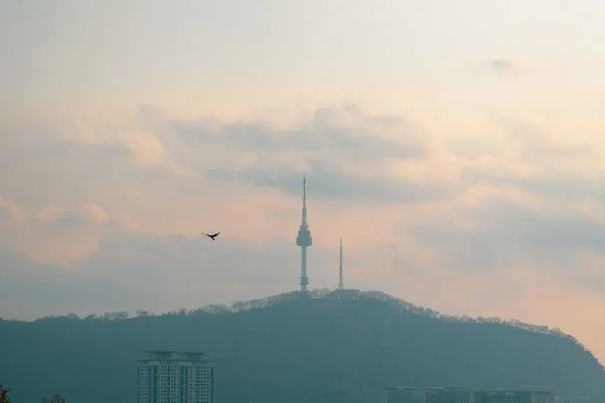

Short answer: for most trips, no — and the reason is a train the pass doesn’t cover.
The KORAIL Pass got genuinely better in 2026: every pass is now flexible, so a 2-day or 5-day pass no longer has to be used on consecutive days. That is a real improvement and it widens the cases where a pass makes sense.
But two facts decide this for most visitors, and neither is prominent when you buy:
- A single Seoul–Busan round trip is cheaper on ordinary tickets. Roughly ₩119,600 in tickets against ₩131,000 for the cheapest 2-day pass. The classic “I’m doing Seoul and Busan” trip — the exact trip most people buy this pass for — loses.
- The pass does not cover SRT, and SRT is the cheaper operator on the same corridor.
The SRT thing nobody mentions
Korea has two high-speed operators on the Seoul–Busan corridor: KTX, run by Korail, and SRT, which is a separate company.
- Seoul–Busan on KTX: about ₩59,800
- Seoul–Busan on SRT: about ₩52,600 — roughly 10% cheaper
The KORAIL Pass covers KTX, KTX-Sancheon, ITX-Saemaeul, ITX-Cheongchun and various tourist trains. It does not cover SRT, and it does not cover city subways.
So the pass asks you to commit to the more expensive operator. If you were going to take SRT anyway, the pass has to beat SRT prices, not KTX ones — which makes the arithmetic worse than the marketing comparison suggests.
One practical note: SRT departs from Suseo in southeastern Seoul rather than Seoul Station, so check which terminus suits where you’re staying before you optimise for a few thousand won.
When the pass does win
It is not a bad product — it is a product for a specific traveller. The pass wins when you are genuinely moving a lot:
- Three or more intercity journeys, not one round trip. Seoul → Busan → Gyeongju → back, or a loop taking in Jeonju and Gangneung, is where it starts paying.
- Short, dense trips where you’d otherwise buy several full-price tickets at short notice.
- Spontaneous plans. Now that every pass is flexible, you can leave days unspent and decide in the morning — that flexibility is the real product.
It loses when you are doing one round trip, when you’re mostly staying in Seoul (the pass doesn’t touch the subway, which is what you’ll actually use), or when SRT serves your route and you’d have taken it.

How to decide, in three steps
- Write down every intercity train journey you will actually take, with dates.
- Price each one individually — and price the SRT alternative where one exists.
- Compare that total against the pass. If it isn’t clearly ahead, buy tickets. Korean rail booking is straightforward and the trains are rarely full enough to strand you.
If you’re weighing this alongside the rest of the budget, how much a South Korea trip costs puts rail in proportion against food, stays and the T-money card. You can also compare rail passes and tickets here or cross-check a second platform — listings and inclusions differ, so read what each one actually covers.
Two things to settle before you fly: entry, because the K-ETA rules changed and the waiver has an end date, and data, since Korean rail apps and maps assume you’re online — see the eSIM guidance for Korea or set one up before you go. It’s also worth comparing cover against what your card already includes.
For the same calculation elsewhere: is the JR Pass worth it? and Europe rail passes in 2026. Planning the wider trip is covered in Seoul for first-timers and the places worth your time in Seoul.
Frequently asked questions
Is the KORAIL Pass worth it for Seoul to Busan? Not on its own. A Seoul–Busan round trip costs roughly ₩119,600 in ordinary tickets against about ₩131,000 for the cheapest 2-day pass, so the single most common trip people buy the pass for is cheaper without it.
Does the KORAIL Pass work on SRT? No. SRT is a separate operator from Korail and is not included, nor are city subways. That matters because SRT is roughly 10% cheaper than KTX on the Seoul–Busan corridor — about ₩52,600 against ₩59,800.
Do KORAIL Pass days have to be consecutive? Not any more. As of 2026 every pass is flexible, so a 2-day or 5-day pass can be used on non-consecutive days within its validity period.
What does the KORAIL Pass actually cover? KTX, KTX-Sancheon, ITX-Saemaeul, ITX-Cheongchun and various tourist trains. It does not cover SRT or metro subway systems.
When is the KORAIL Pass a good buy? When you’re making three or more intercity journeys, travelling at short notice where full-price tickets stack up, or you want the freedom to decide each morning now that days no longer need to be consecutive.
Sources & further reading
- KORAIL — Korea Rail Pass coverage and 2026 flexible-day change
- Published KTX and SRT fares for the Seoul–Busan corridor, 2026
- Comparative pricing of pass versus point-to-point tickets, 2026
Fares, pass prices and coverage change. Confirm current prices with KORAIL and SRT before buying. This article contains affiliate links; if you book through them we may earn a commission at no extra cost to you.
Frequently asked questions
Is the KORAIL Pass worth it for Seoul to Busan?
Not on its own. A Seoul-Busan round trip costs roughly 119,600 won in ordinary tickets against about 131,000 won for the cheapest 2-day pass, so the most common trip people buy the pass for is cheaper without it.
Does the KORAIL Pass work on SRT?
No. SRT is a separate operator from Korail and is not included, nor are city subways. SRT is roughly 10% cheaper than KTX on the Seoul-Busan corridor, about 52,600 won against 59,800 won.
Do KORAIL Pass days have to be consecutive?
Not any more. As of 2026 every pass is flexible, so a 2-day or 5-day pass can be used on non-consecutive days within its validity period.
What does the KORAIL Pass cover?
KTX, KTX-Sancheon, ITX-Saemaeul, ITX-Cheongchun and various tourist trains. It does not cover SRT or metro subway systems.
When is the KORAIL Pass a good buy?
When you are making three or more intercity journeys, travelling at short notice where full-price tickets stack up, or you want the freedom to decide each morning now that days no longer need to be consecutive.
Keep reading on Gently Yonder
- How Much Does a South Korea Trip Cost? — A realistic 2026 budget — flights, stays, food, T-money, the KTX, and where costs surprise you.
- Do You Need a K-ETA for South Korea? (2026) — 22 countries are K-ETA-exempt through 31 Dec 2026 — but you still need an arrival card. What changed, and how to prepare.
- Best eSIM for South Korea (2026) — How to choose a Korea travel eSIM — coverage, data plans, and the pick for most trips.
- Is the JR Pass Worth It in 2026? — An honest calculation after the price rise — break-even itineraries and the alternatives.
- Europe Rail Passes in 2026 — Eurail and Interrail merged in September 2026 — and compulsory reservations, not the pass price, decide whether it pays.
- Seoul: A First-Timer's Guide — The royal palaces, Bukchon Hanok Village, Gwangjang Market, and a DMZ day trip.